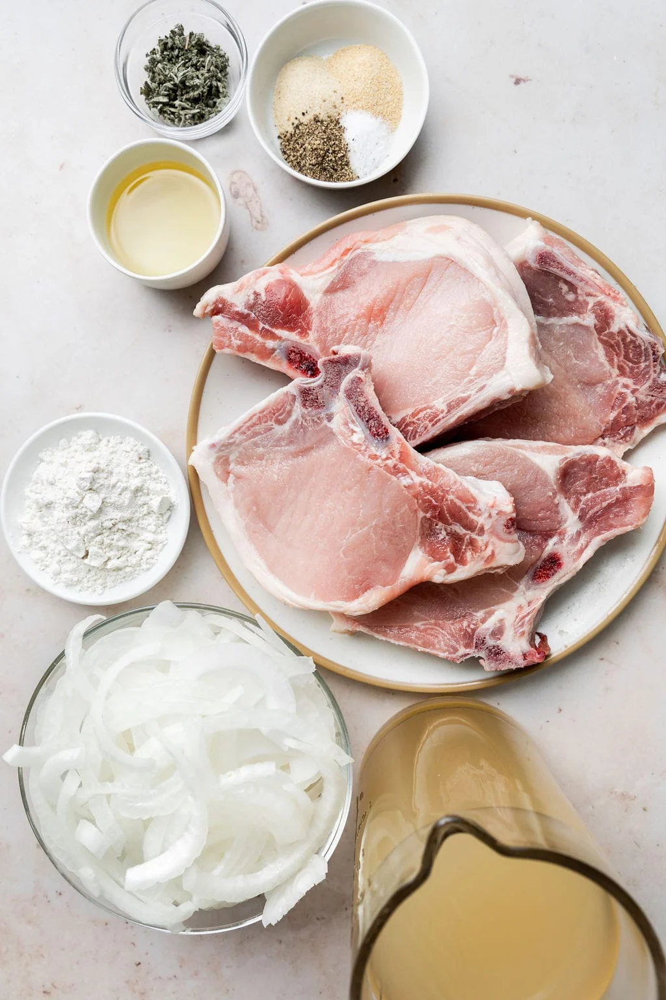
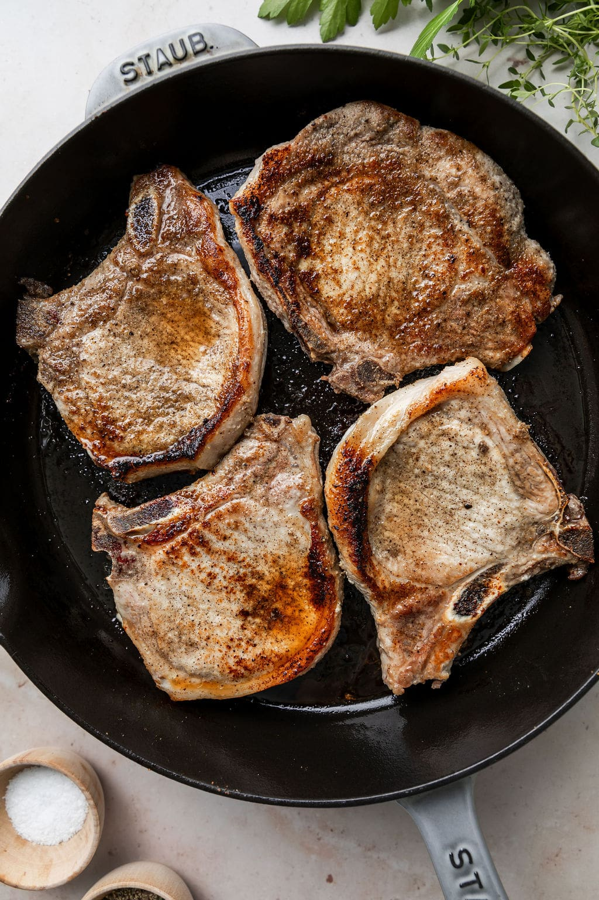
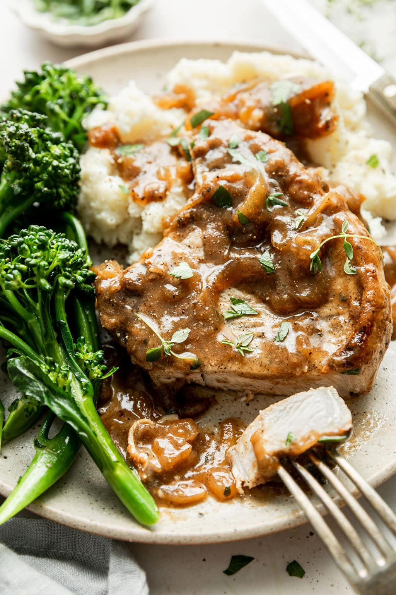

Ingredients
- 1 teaspoon garlic powder
- 1 teaspoon onion powder
- 1 teaspoon fine salt, divided
- ½ teaspoon black pepper
- 4 bone-in or boneless pork chops (each about ¾– to 1-inch thick; 1 ½ to 2 lbs total)
- 2 tablespoons avocado oil or olive oil
- 1 sweet yellow onion, thinly sliced
- 2 cups chicken broth, divided
- 3 tablespoons all-purpose flour (use gluten-free, if needed)
- 1 teaspoon ground sage
Directions
- In a small bowl, combine the garlic powder, onion powder, ½ teaspoon salt, and pepper; stir together.
- Season both sides of the pork chops generously with all of the seasoning mixture.
- Heat 1 tablespoon of the oil in a large heavy nonstick skillet over medium-high heat.
- When the oil is hot, add the pork chops to the skillet and cook until browned on one side, 3-4 minutes. Turn the pork chops over and cook on the other side for another 3-4 minutes.
- Remove the pork chops to a plate and cover with an inverted plate to keep them warm.
- Add the remaining 1 tablespoon of oil to the skillet and swirl it around. Then, add ¼ cup of the broth to the skillet to deglaze it, stirring up any browned bits from the bottom of the skillet.
- Add the sliced onion and saute until browned and tender, 8 to 10 minutes.
- When the onions are softened, sprinkle the flour over the onions and stir until there is no more white flour showing. NOTE: The onions should be coated with the flour and thickened.
- Add the remaining 1¾ cups broth to the skillet and stir to deglaze again, loosen up the onions and any browned bits on the bottom of the skillet.
- Add the ground sage and the remaining ½ teaspoon salt. Bring the mixture to a simmer until thickened, which takes about 1 minute.
- Return the pork chops to the skillet, tucking them into the gravy and spooning the onions over top.
- Continue to cook until the thickest part of the pork chops register at 145 on a meat thermometer, which could take another 2 to 6 minutes, depending on the thickness of the chops.
- Garnish with fresh herbs, such as fresh thyme sprigs or chopped fresh parsley.
- If desired, serve the pork chops with mashed potatoes and spoon the gravy over top.